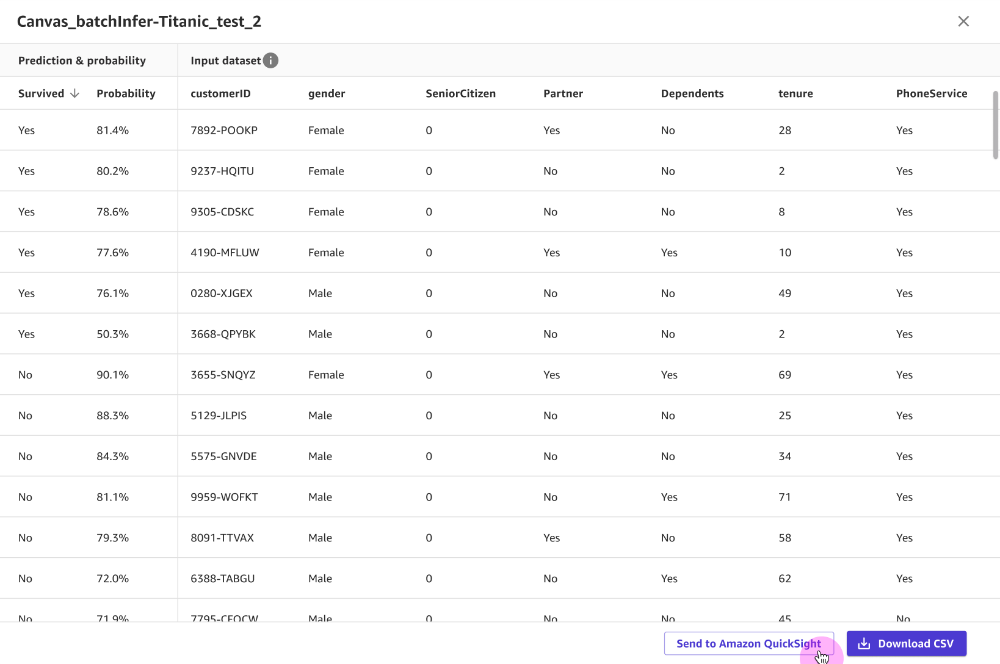
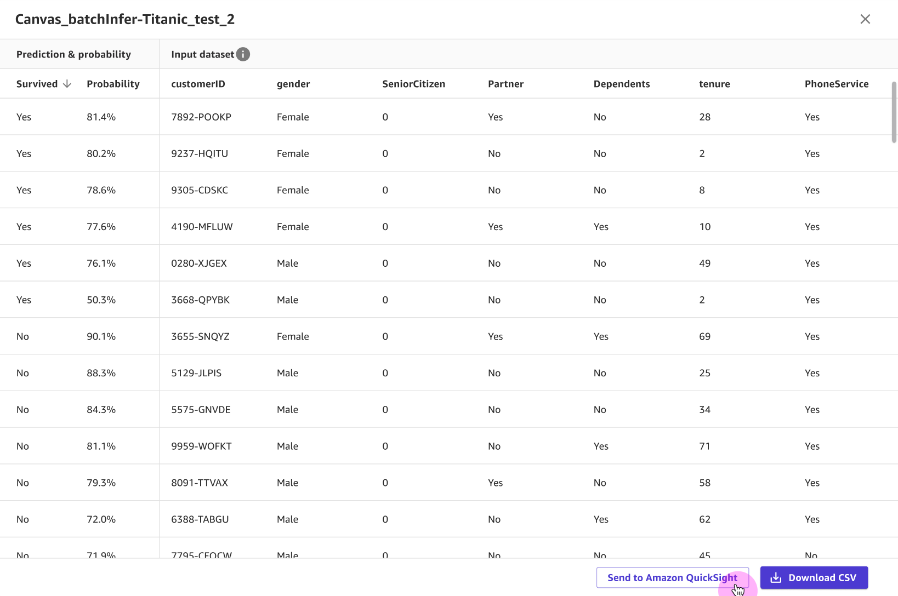
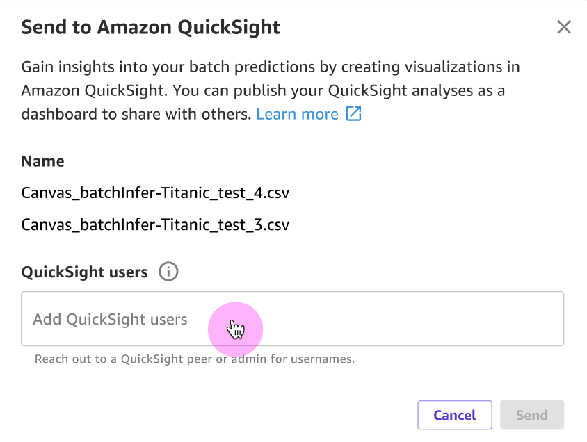

Send predictions to Amazon QuickSight
Note
You can send batch predictions to Amazon QuickSight for numeric and categorical prediction and time series forecasting models. You can also send predictions generated with BYOM models. Single-label image prediction and multi-category text prediction models are excluded.
Once you generate batch predictions with custom tabular models in SageMaker Canvas, you can send those predictions as CSV files to Amazon QuickSight, which is a business intelligence (BI) service to build and publish predictive dashboards.
For example, if you built a 2 category prediction model to determine whether a customer will churn, you can create a visual, predictive dashboard in QuickSight to show the percentage of customers that are expected to churn. To learn more about Amazon QuickSight, see the Amazon QuickSight User Guide.
The following sections show you how to send your batch predictions to QuickSight for analysis.
Before you begin
Your user must have the necessary AWS Identity and Access Management (IAM) permissions to send your predictions to QuickSight. Your administrator can set up the IAM permissions for your user. For more information, see Grant Your Users Permissions to Send Predictions to Amazon QuickSight.
Your QuickSight account must contain the default
namespace, which is set up when you first create your QuickSight account. Contact
your administrator to help you get access to QuickSight. For more information, see
Setting
up for Amazon QuickSight in the Amazon QuickSight User
Guide.
Your QuickSight account must be created in the same Region as your Canvas application. If your QuickSight account’s home Region differs from your Canvas application’s Region, you must either close and recreate your QuickSight account, or set up a Canvas application in the same Region as your QuickSight account. You can check your QuickSight home Region by doing the following (assuming you already have a QuickSight account):
Open your QuickSight console
. When the page loads, your QuickSight home Region is appended to the URL in the following format:
https://.<your-home-region>.quicksight.aws.amazon.com/
You must know the usernames of the QuickSight users to whom you want to send your
predictions. You can send predictions to yourself or other users who have the right
permissions. Any users to whom you send predictions must be in the
default
namespace of your QuickSight account and have the Author or
Admin role in QuickSight.
Additionally, QuickSight must have access to the SageMaker default Amazon S3 bucket for your Domain, which is named
with the following format: sagemaker-.
The Region should be the same as your QuickSight account's home Region and your Canvas application’s Region.
To learn how to give QuickSight access to the batch predictions stored in your Amazon S3 bucket, see the topic
I can’t connect to Amazon S3 in the
Amazon QuickSight User Guide.{REGION}-{ACCOUNT_ID}
Supported data formats
Before sending your predictions, check that the data format of your batch predictions is compatible with QuickSight.
To learn more about the accepted data formats for timeseries data, see Supported date formats in the Amazon QuickSight User Guide.
To learn more about data values that might prevent you from sending to QuickSight, see Unsupported values in data in the Amazon QuickSight User Guide.
Also note that Amazon QuickSight uses the character " as a text qualifier, so if your Canvas data contains any " characters,
make sure that you close all matching quotes. Any mismatching quotes can cause issues with sending your dataset to QuickSight.
Send your batch predictions to QuickSight
Use the following procedure to send your predictions to QuickSight:
Open the SageMaker Canvas application.
In the left navigation pane, choose My models.
On the My models page, choose your model.
Choose the Predict tab.
Under Predictions, select the dataset (or datasets) of batch predictions that you’d like to share. You can share up to 5 datasets of batch predictions at a time.
-
After you select your dataset, choose Send to Amazon QuickSight.
Note
The Send to Amazon QuickSight button doesn’t activate unless you select one or more datasets.
Alternatively, you can preview your predictions by choosing the More options icon (
 ) and then View prediction results.
From the dataset preview, you can choose Send to Amazon QuickSight. The following screenshot
shows you the Send to Amazon QuickSight button in a dataset preview.
) and then View prediction results.
From the dataset preview, you can choose Send to Amazon QuickSight. The following screenshot
shows you the Send to Amazon QuickSight button in a dataset preview. -
In the Send to Amazon QuickSight dialog box, do the following:
For QuickSight users, enter the name of the QuickSight users to whom you want to send your predictions. If you want to send them to yourself, enter your own username. You can only send predictions to users in the
defaultnamespace of the QuickSight account, and the user must have theAuthororAdminrole in QuickSight.Choose Send.
The following screenshot shows the Send to Amazon QuickSight dialog box:

After you send your batch predictions, the QuickSight field for the datasets you sent shows as Sent.
In the confirmation box that confirms your predictions were sent, you can choose Open Amazon QuickSight to open your QuickSight
application. If you’re done using Canvas, you should
log out of the Canvas application.
The QuickSight users that you’ve sent datasets to can open their QuickSight application and view the Canvas datasets that have been shared with them. Then, they can create predictive dashboards with the data. For more information, see Getting started with Amazon QuickSight data analysis in the Amazon QuickSight User Guide.
By default, all of the users to whom you send predictions have owner permissions for the dataset in QuickSight. Owners are able to create analyses, refresh, edit, delete, and re-share datasets. The changes that owners make to a dataset change the dataset for all users with access. To change the permissions, go to the dataset in QuickSight and manage its permissions. For more information, see Viewing and editing the permissions users that a dataset is shared with in the Amazon QuickSight User Guide.